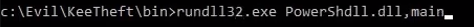

Powershell block bypass
This tool will allow us to bypass this ;)
https://github.com/p3nt4/PowerShdll- (only need the release)

**Running this without modification will get caught by windows defender**
> rundll32.exe PowerShdll.dll, main
THIS OPENS A POWERSHELL SHELL
We must change the signature
Changing a file signature
Example: modify DLL - We are modifying the dll workaround for a blocked powershell.exe
BEFORE

The only change is to the intial signature
modifyed byte 6F --> 61

AFTER

export...